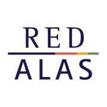
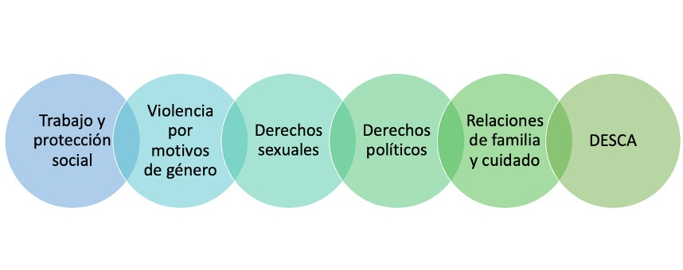

Sentencias con Perspectiva de Género (SPG) de las altas cortes latinoamericanas

Proyecto Institucionalidades de Género en los Sistemas de Justicia de América Latina (DIGES)
El Programa Investigar en Red de la Red ALAS pone a disposición de lxs investigadorxs la base de datos de Sentencias con Perspectiva de Género (SPG) de las altas cortes de la región que sistematiza decisiones sobre temáticas de las agendas feministas y de la diversidad sexual de altas cortes de países de la región.
La base de datos SPG ha sido elaborada en el marco del proyecto Decisiones e Institucionalidades de Género en los Sistemas de Justicia de América Latina (DIGES) por el equipo de investigadoras/es que forman parte del Colaboratorio Derecho y Desarrollo con sede en la Escuela de Derecho de la Universidad Torcuato Di Tella.
Es una base de datos que prevé una construcción incremental combinando información cuantitativa y cualitativa, alojada en Excel, que incluye datos relevados a partir de la jurisprudencia generada por las altas cortes de países de la región, relativa a argumentos con perspectiva de género o leading cases. La versión 1.0 de la base de datos está conformada por sentencias judiciales dictadas por las altas cortes de Argentina, Chile, México y Perú entre 2000 y 2022.
La base de datos constituye una herramienta sobre la cual es posible intervenir y analizar de modo comparado los casos, los países, las dimensiones y los campos en función de los objetivos y preguntas que se plantee cada usuaria/o de la base.
Con esta herramienta, el Colaboratorio en Derecho y Desarrollo de la Escuela de Derecho de UTDT junto con la Red ALAS buscan aumentar los niveles de información y análisis sobre las decisiones de las Cortes Supremas de Justicia de Argentina, Chile, México y Perú en materia de derechos de las mujeres y personas LGBTTI+ desde un enfoque con perspectiva de género, con el objeto de contribuir al desarrollo de estudios de derecho comparado y aportar a los debates de las agendas de género en la región.
Coordinadoras del proyecto: Paola Bergallo y Andrea Castagnola
Base de datos de SPG
Descarga la base de datos y el libro de códigos:
Cómo citar la base de datos:
Paola Bergallo y Andrea Castagnola (2024). “Sentencias con Perspectiva de Género (SPG) de las altas cortes de países de la región (Versión 1.0)” en el marco del proyecto "Decisiones e Institucionalidades de Género en los Sistemas de Justicia de América Latina (DIGES)", realizado por el Colaboratorio Derecho y Desarrollo de la Escuela de Derecho de la Universidad Torcuato Di Tella y la Red ALAS. Última modificación: Noviembre 2024. Disponible en: https://utdt-colab.github.io/spg-diges/.
Agradecimientos
La base de datos se trabajó en 2 etapas.
Durante todas las etapas de desarrollo y ejecución del proyecto participaron más de 65 personas entre ellas docentes, investigadoras, y alumnas pertenecientes a diversas instituciones académicas de la Argentina.
La coordinación de equipos de trabajo estuvo a cargo de: Ada Daglio, Florencia Gayraud, Mariano Valentini, Anahi P. González y Natalia Debandi.
Las siguientes personas participaron de la sistematización y generación de la base de datos: Micaela Prandi, Catalina De Cicco, Josefina Mortola Saiach, Miguel Schargrodsky, Sofía Loira, Lucía Chiban, Antonella Panelli, Elisa Correa, Lucía Almasqué, Yazmín Nataly Morales, Lautaro Bobadilla, Guillermina Pappier, María Emilia Arieu, Lu Roda, Valentina Gramigna, Candela Basilotta, Camila Beatriz Saleme, Ana Carolina Chocobar Cruz, Aldana Nerea Bazán, María Camila Santin Nofal, Milagros Medinaceli, Sofía Maloneay, Florencia Gallinger, Ricardo Augusto Fernández, Sara Mendavia Colominas, Amparo Godoy, Luana Alvarado, Lara Forlino, María Azize El Halli Obeid, Melina Sol Signorello, Dolores Perino, Milagros Salvatierra, Daniela De Biase, María Victoria Fernández, Camila de los Ángeles López, Camila Saleme, Paloma Contreras, Felicitas Barrera, Cristina Jazmín Antonio, Nicolas Aubin Audet, Pilar Azar, Candela Castellanos Huertas, Delfina Lucía Chiesa, Katherine Cufré, Candela Eddi, Valentino Gariglio, Jazmin Gonte, Olivia Gonzalez, Milagros Jurado, Candela Memi, Tiziana Pelliza, Malena Rosso, Lourdes Selliez, Luciana Yael Weintraub, Lucia Artuso, Malena Ejberowicz, y Camila Pérez Bareta.
Email de contacto
Ante cualquier consulta sobre la base de sentencias de altas cortes de países de la región se puede escribir a: colab@utdt.edu
Metodología utilizada para la creación de la base de datos SPG
Índice
¿Qué es la base de datos de sentencias?
El Programa Investigar en Red de la Red ALAS pone a disposición de lxs investigadorxs la base de datos de Sentencias con Perspectiva de Género (SPG) de las altas cortes de la región que sistematiza decisiones sobre temáticas de las agendas feministas y de la diversidad sexual de altas cortes de países de la región.
La base de datos SPG ha sido elaborada en el marco del proyecto Decisiones e Institucionalidades de Género en los Sistemas de Justicia de América Latina (DIGES) por el equipo de investigadoras/es que forman parte del Colaboratorio Derecho y Desarrollo con sede en la Escuela de Derecho de la Universidad Torcuato Di Tella.
Es una base de datos que prevé una construcción incremental combinando información cuantitativa y cualitativa, alojada en Excel, que incluye datos relevados a partir de la jurisprudencia generada por las altas cortes de países de la región, relativa a argumentos con perspectiva de género o leading cases. La versión 1.0 de la base de datos está conformada por sentencias judiciales dictadas por las altas cortes de Argentina, Chile, México y Perú entre 2000 y 2022.
La base de datos constituye una herramienta sobre la cual es posible intervenir y analizar de modo comparado los casos, los países, las dimensiones y los campos en función de los objetivos y preguntas que se plantee cada usuaria/o de la base.
Con esta herramienta, el Colaboratorio en Derecho y Desarrollo de la Escuela de Derecho de UTDT junto con la Red ALAS buscan aumentar los niveles de información y análisis sobre las decisiones de las Cortes Supremas de Justicia de Argentina, Chile, México y Perú en materia de derechos de las mujeres y personas LGBTTI+ desde un enfoque con perspectiva de género, con el objeto de contribuir al desarrollo de estudios de derecho comparado y aportar a los debates de las agendas de género en la región.
¿Cómo se hizo la base?
El proceso de construcción de la base de datos implicó 7 etapas:
1. Creación de un manual en donde establecimos:
(1) los criterios y palabras de búsqueda de sentencias que incluyeron términos usados o del lenguaje natural y/o técnicos, instrumentos de derechos humanos y/o conceptos referidos a discriminación interseccional (ver sección “Qué tipo de sentencias se analizaron?” y Anexo II Palabras claves)
(2) identificamos las 58 variables a codificar y redacción del libro de códigos para capturar la información de las sentencias (ver sección “Qué contiene la base de datos de sentencias?” y en el documento: Libro de Código DIGES Versión 1.0).
2. Búsqueda de sentencias según los criterios especificados.
3. Lectura sistemática de cada sentencia.
4. Selección (y descarga) de sentencias que cumplan con los requisitos establecidos en el manual.
5. Codificación de las sentencias utilizando el libro de códigos.
6. Revisión de codificación.
7. Consolidación de los datos de todos los países. Cada una de estas etapas supuso la toma de decisiones de índole teórico, metodológico y empírico que quedaron plasmadas en los diversos materiales producidos y a disponibilidad para su consulta.
Criterios de búsqueda y selección
Para la búsqueda de las sentencias se recurrió inicialmente a los buscadores de acceso abierto de cada una de las instancias judiciales. Algunos de estos buscadores tienen una experiencia de usuario más accesible que otros, especialmente el de la Corte Suprema de Chile que el servidor presentó fallas en reiteradas oportunidades. Las sentencias analizadas que forman parte de la base de datos fueron aquellas que cumplieron con los siguientes dos criterios de selección:.
Criterio 1: Dimensiones o área temática
Primero se seleccionaron sentencias en torno a 6 áreas temáticas o dimensiones:
Trabajo y protección social, Violencia por motivos de género, Derechos sexuales y reproductivos, Derechos políticos, Relaciones de Familia y Cuidado y DESCA.

Criterio 2. Perspectiva de género
Segundo, una vez que fueron identificadas las sentencias en torno a las dimensiones se seleccionaron solo aquellas que tuvieran una perspectiva de género. El equipo utilizó dos estrategias para poder identificar cuales de todas las sentencias seleccionadas bajo el criterio 1 tienen perspectiva de géneros.
Opción 1: analizar los argumentos, debates y sentencias
Juzgar con perspectiva de género supone que los principales argumentos y debates de los jueces que se encuentran en la sentencia se centran en los factores estructurales que generan desventajas políticas, económicas, sociales para las mujeres y/o LGBTQ+, impidiéndoles alcanzar una igualdad sustantiva de derechos. Lo que determina si en un proceso se debe aplicar o no es la existencia de situaciones asimétricas de poder, o bien de contextos de desigualdad estructural basados en el sexo, el género, las preferencias u orientaciones sexuales, entre otros (Palomo Caudillo, 2021). Es importante que tengan en cuenta que juzgar con perspectiva de género no implica darles la razón o fallar a favor de las mujeres y/o LGBTQ+ siempre y bajo cualquier circunstancia.
Ejemplo de sentencia con perspectiva de géneros que SÍ deben formar parte de la base de datos de cada uno de los países: Fallo FAL.
Ejemplo de sentencia sin perspectiva de género que NO deben estar en la base de datos: cuando la discusión de los jueces gira en torno a la discusión de la pena o a lo procedimental sin una distinción de género; o se trata de derechos de los niños y no se utiliza el género como variable argumentativa. (Pueden existir otros casos, estos son meramente ilustrativos).
Opción 2: sentencias leading case sin argumentación basada en género pero con cambios en jurisprudencia
También se incluyen en la base de datos aquellas sentencias leading case que cambiaron la jurisprudencia (positiva o negativamente) en materia de derechos para las mujeres y/o la población LGBTQ+. En algunos casos el cambio de jurisprudencia es evidente debido a la forma de argumentar de los magistrados mientras que en otros casos deberán revisar fuentes secundarias para confirmar si efectivamente la sentencia fue un hito/leading case. Es importante tener en cuenta, que en estas sentencias hito los magistrados pueden no están argumentando o debatiendo necesariamente si el derecho en cuestión se centra en una desventaja estructural (si estuvieran argumentando o decidiendo con esa perspectiva ya deberían haber ingresado mediante la opción 1).
Ejemplo de sentencias hito/leading cases que no tienen argumentación, debate o decisión bajo las pautas 1 pero que SÍ deben formar parte de la base de datos: Atala Riffo (Chile). La sentencia no tiene perspectiva de género ni es favorable la decisión de la Corte para la población LGBTQ+ pero es el primer caso en el que se discute si una pareja homosexual puede acceder a los mismos derechos de custodia o tuición que una pareja heterosexual.
Estos casos que cumplen con los requisitos de la opción 2 formaron parte de la base de datos dado que las sentencias hito, si bien pueden no argumentar con una perspectiva de géneros, si se convierten en precedente o cambian el status o los derechos de las mujeres y/o LGBTQ+.
¿Qué variables contiene la base?
La base de datos recopila información sobre 58 aspectos/campos/variables de forma sistemática y objetiva para todas las sentencias que fueron seleccionadas.
Las variables seleccionadas permiten capturar información específica sobre diferentes aspectos de la sentencia como por ejemplo, el perfil de las partes involucradas, área de derecho, votación, principios mencionados, instrumentos legales internacionales utilizados, y remedios de la sentencia, entre otros. En el documento “SPG-DIGES Libro de Código (Versión 1.0)” se encuentra el listado completo con una descripción.
La mayoría de la información capturada permite su análisis cuantitativo ya que una gran mayoría de las variables son categóricas y algunas pocas cualitativas. Las variables categóricas ya indican de forma exhaustiva las opciones posibles a responder para cada variables, ejemplo: tipo de caso (variable 8): (1) individual o (2) colectivo; dimensión (variable 5): (1) Trabajo y protección social, (2) Violencia por motivos de género, (3) Derechos sexuales y reproductivos, (4) Derechos políticos, (5) Relaciones de Familia y Cuidado y (6) DESCA. Cuando la variable puede contener más de una de las opciones enlistadas, se deberá separar cada opción con un coma “,”, por ejemplo: Derechos Políticos, DESCA. También se incluyen campos cualitativos, tales como: sinopsis de los hechos y holding.
Glosario
Altas cortes: refiere a las máximas instancias judiciales de cada uno de los países incluidos en la investigación. Según el caso, refiere exclusivamente a las Cortes Supremas o también a las Cortes Constitucionales. En la versión 1.0 altas cortes refiere a Cortes Supremas de Justicia para Argentina, Chile, México y Perú.
Derechos políticos: Refiere a la cuestión de la igualdad políticas de mujeres y LGBTTIQ+.
Derechos sexuales y reproductivos: incluye temas vinculados a derechos reproductivos y sexualidad. El punto de contacto de uno y otro tema refiere al objetivo de disciplinamiento de los cuerpos de los colectivos de mujeres (Pitch, 2010) y LGBTTIQ+.
DESCAs: si bien se retoma la definición amplia de DESCA desarrollada por el Pacto Internacional de Derechos Económicos, Sociales y Culturales (PIDESC) y su Comité, en la codificación de la base de sentencias, actúa como una categoría residual. Así, incluye: acceso a la Justicia y Ciudadanía, derecho a la salud, a la educación y ambiental, entre otros derechos que no hayan podido ser catalogados en las otras dimensiones.
Diversidad sexual o de género: refiere a prácticas, expresiones, identidades o identificaciones, discursos y políticas vinculadas a la sexualidad, entendida como una experiencia amplia atravesada por las relaciones sociales, afectivas, políticas y culturales diversas. Asimismo, refiere al reconocimiento de derechos a los colectivos LGBTTIQ+ en condiciones de igualdad y no discriminación.
Institucionalidades de género: La institucionalidad de género refiere a las actividades con miras a implementar un enfoque de género, para los casos que aquí analizamos, tanto en el funcionamiento interno de la justicia como en la provisión de servicios a la ciudadanía. Incluye múltiples estructuras organizacionales y funciones unipersonales que engloban “mecanismos”, “oficinas” o “dependencias”. Esta definición se aplica también a otras instancias estatales.
Leading case o hito: sentencias que cambiaron la jurisprudencia (positiva o negativamente) en materia de derechos para las mujeres y/o la población LGTBQ+.
LGBTTI+: lesbianas, gays, bisexuales, travestis, transexuales, transgénero, intersex, no binaries e identidades no heteronormadas.
Perspectiva de género: Juzgar con perspectiva de género supone que los principales argumentos y debates de los jueces que se encuentran en la sentencia se centran en los factores estructurales que generan desventajas políticas, económicas, sociales para las mujeres y/o LGBTQ+, impidiéndoles alcanzar una igualdad sustantiva de derechos. Lo que determina si en un proceso se debe aplicar o no es la existencia de situaciones asimétricas de poder, o bien de contextos de desigualdad estructural basados en el sexo, el género, las preferencias u orientaciones sexuales, entre otros (Palomo Caudillo, 2021). Juzgar con perspectiva de género no implica darles la razón o fallar a favor de las mujeres y/o LGBTQ+ siempre y bajo cualquier circunstancia.
Relaciones de familia y cuidado: incluye casos relativos a derecho de familia y también a tareas de cuidado. Este último dado que suelen ser las mujeres las que asumen la mayor carga del trabajo no remunerado que implican las tareas de cuidado.
Trabajo y protección social: refiere al derecho de las mujeres a igualdad de oportunidades en trabajo y derecho a las instancias de Seguridad Social existentes. Así los temas incluidos son: cuotas/ cupos por género, discriminación laboral por cuestiones de género, paridad de género, acceso a derechos propios de la seguridad social.
Violencia por motivos de género: Siguiendo la definición de Naciones Unidas: “La violencia de género se refiere a los actos dañinos dirigidos contra una persona o un grupo de personas en razón de su género. Tiene su origen en la desigualdad de género, el abuso de poder y la existencia de normas dañinas. El término se utiliza principalmente para subrayar el hecho de que las diferencias estructurales de poder basadas en el género colocan a las mujeres y niñas en situación de riesgo frente a múltiples formas de violencia. (…) En ocasiones se emplea este término para describir la violencia dirigida contra las poblaciones LGBTQI+, al referirse a la violencia relacionada con las normas de masculinidad/feminidad o a las normas de género”.